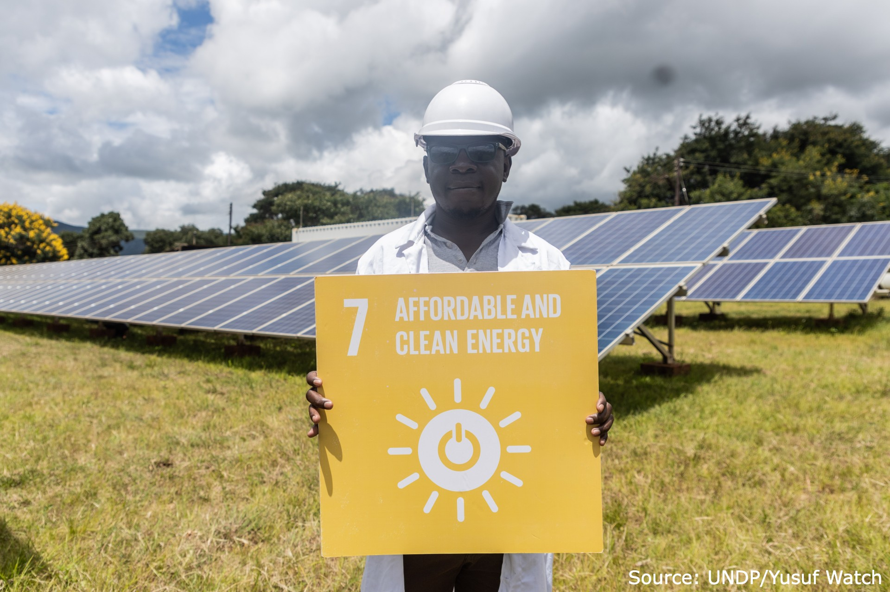

Finding good spots for decentralized green energy grids in Uganda - AI based site identification for MiniGrids

The Site Identification tool is an AI-driven tool to enhance renewable energy planning. This tool utilizes machine learning and satellite imagery to identify optimal sites for renewable energy deployment, particularly in remote regions. A successful pilot in Lamwo District demonstrated its potential to improve energy access by recommending suitable electrification strategies for villages. This initiative aligns with Uganda’s National Electrification Strategy, which seeks to connect 10 million households to the most optimal energy source by 2030.
Data characteristics
-• Data Type: Geospatial and tabular
• Key Variables: Solar Irradiance,Biomass Resources,Wind Speed and Consistency,Biomass Resources,Hydropower Potential,
Population Density,Proximity to Existing Grids,Road Networks,Land Availability,Protected Areas,Cost of Energy Delivery
• The data adheres to FAIR (Findable, Accessible, Interoperable, Reusable) principles and includes anonymization measures to protect sensitive information.
For this dataset / use case, a responsible AI Assessment was undertaken to help AI developers and project managers to identify, assess and mitigate potential harms and biases in AI. For methodology, see https://www.bmz-digital.global/en/news/ethical-crash-test-for-ai-how-to-navigate-the-road-to-responsible-innovation/
Model characteristics
This web application is a decision support tool. It is built as a prototype for a large-scale decision support tool for determining electrification strategies for different geographical areas. Currently implemented in Lamwo district electrification.
How to use
This web application is a prototype decision support tool designed to guide electrification strategies across various geographic areas. It offers an initial village-level assessment through a color-coded map, with the legend explaining each category. Users can explore detailed analyses at the village level—the smallest unit for assessing electrification needs. The tool evaluates both demand and supply factors and suggests the most suitable energy solutions, including biomass, wind, solar home systems, mini-grids, or grid extension. It is intended to support government officials, energy sector stakeholders, and development partners in making informed renewable energy decisions.
Datasets
Use cases
About
Powered by / Provided by: Sunbird.ai
Catalyzed by: FAIR Forward - AI for All, GIZ
Financed by: BMZ
Contact: Sunbird.ai (emwebaze@sunbird.ai)